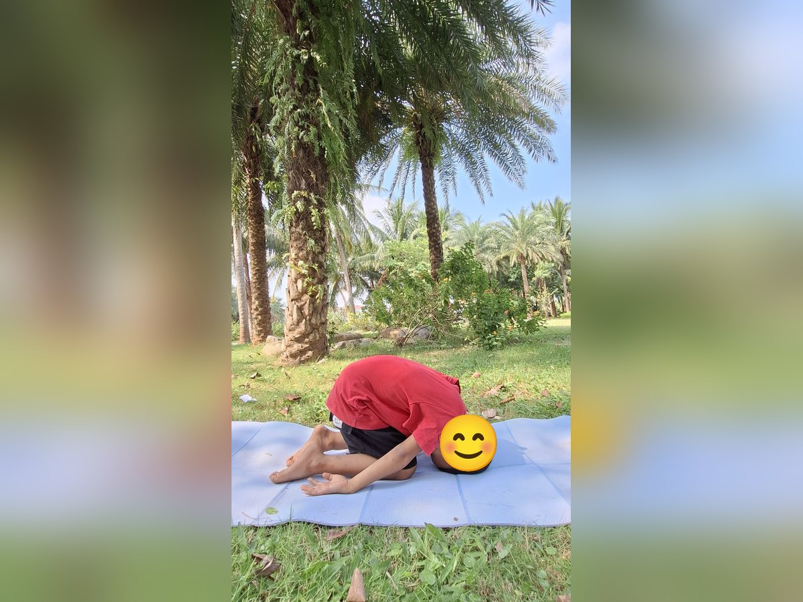
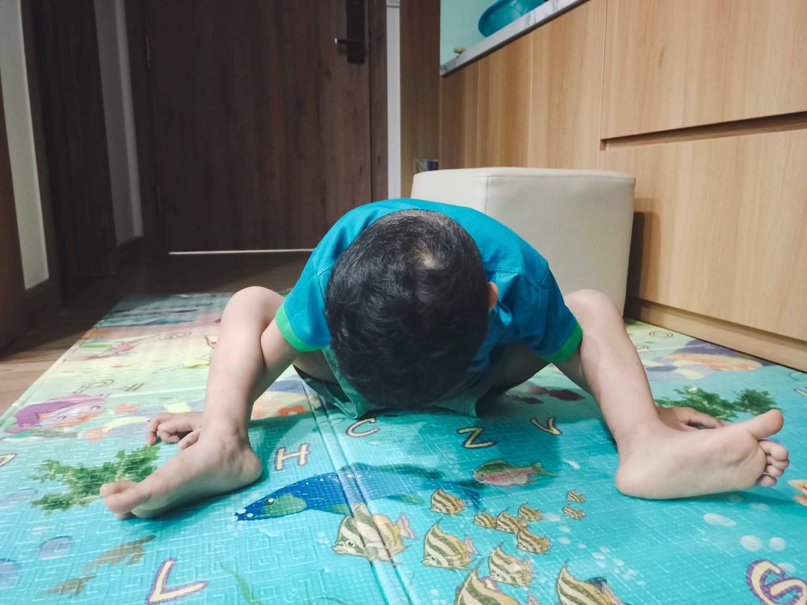
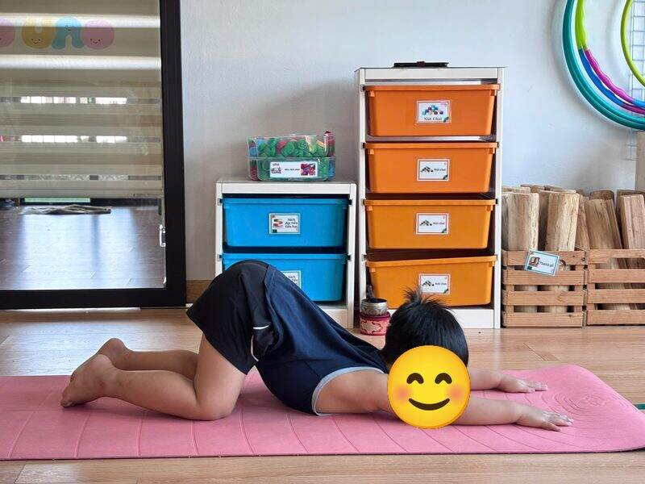

Chủ đề 24 · Con vật nuôi trong nhà
Cún Vàng giữ nhà
🌟 Bài học trong câu chuyện
Giới luật yoga: Satya – Trung thực, nói thật. Bé dám nói thật, kể cả khi mình làm sai.
Kỹ năng sống: Chăm sóc vật nuôi, nói thật khi làm sai.
1. Khởi động (2 phút)
Cả lớp ngồi xếp bằng thành vòng tròn. Cùng thở 3 hơi thở bông hoa: hít vào bằng mũi như ngửi hoa, thở ra bằng miệng thật chậm. Chắp tay trước ngực và chào nhau: “Namaste, chào các bạn!”
2. Câu chuyện: Cún Vàng giữ nhà (đọc cho bé nghe, 4 phút)
Cô đọc trọn câu chuyện cho bé nghe trước. Sau đó cô kể lại từng đoạn ngắn và cả lớp cùng tập 10 tư thế ở phần bên dưới.
Nhà bé Tin nuôi rất nhiều con vật: Cún Vàng, Mèo Mướp, Gà Trống, Vịt Con, Thỏ Trắng, Cá Vàng, chú Vẹt và bạn Rùa. Hôm nay bố mẹ và Tin đi vắng, Cún Vàng được giao trông nhà.
Cún Vàng vươn vai thức dậy: "Gâu gâu! Hôm nay mình làm chủ nhà!". Mèo Mướp cong lưng đi bắt chuột. Gà Trống vỗ cánh gáy vang "Ò ó o!". Vịt Con lạch bạch ra ao.
Thỏ Trắng đang gặm cà rốt thì Cún Vàng chạy nhảy lung tung, đụng đổ cả giỏ cà rốt lăn khắp sân. Thỏ mếu máo. Cún Vàng hoảng quá: "Chết rồi, Tin về sẽ mắng mình mất. Hay là... mình nói là Mèo làm?"
Cá Vàng trong bể nhìn thấy hết. Chú Vẹt đậu trên cành kêu: "Nói thật! Nói thật!". Cún Vàng cúi đầu suy nghĩ. Bạn Rùa bò đến, nói chậm rãi: "Nói dối thì lòng mình nặng trĩu. Nói thật thì lòng mình nhẹ nhõm".
Chiều, Tin về nhà, thấy cà rốt vương khắp sân. Mèo Mướp sợ bị mắng oan. Cún Vàng bước ra, duỗi người thật thấp: "Gâu, con làm đổ đấy ạ, con xin lỗi". Tin ngồi xuống xoa đầu Cún: "Cảm ơn Cún đã nói thật. Mình cùng nhặt cà rốt nhé". Cả nhà cùng dọn, vui vẻ như chưa có chuyện gì.
3. Kể lại và tập 10 tư thế (6 phút)
-
 1
1Chú chó
🧘 Tư thế Chó úp mặt (Downward Dog)
Lời kể khi tập: Cún Vàng vươn vai thức dậy: "Gâu gâu! Hôm nay mình trông nhà!"
Cách làm: Chống hai tay và hai chân xuống thảm, nâng mông lên cao, người thành hình tam giác. Giữ 3 đến 5 nhịp thở.
-
 2
2Chú mèo
🧘 Tư thế Mèo bò (Cat-Cow)
Lời kể khi tập: Mèo Mướp cong lưng, võng lưng: "Meo, mình đi bắt chuột đây".
Cách làm: Chống tay và gối, hít vào võng lưng ngẩng đầu (bò "ò ò"), thở ra cong lưng cúi đầu (mèo "meo"). Giữ 3 đến 5 nhịp thở.
-
 3
3Gà trống gáy
🧘 Tư thế Gà con vỗ cánh (Chicken Wings)
Lời kể khi tập: Gà Trống vỗ cánh gáy vang: "Ò ó o!"
Cách làm: Ngồi xếp bằng, hai bàn tay đặt lên vai, khuỷu tay vỗ lên xuống như cánh gà. Giữ 3 đến 5 nhịp thở.
-
 4
4Vịt con
🧘 Tư thế Ngồi xổm (Garland)
Lời kể khi tập: Vịt Con lạch bạch đi ra ao: "Cạp cạp!"
Cách làm: Ngồi xổm, hai gối mở rộng, gót chân chạm sàn nếu được, hai tay chắp trước ngực. Bé nhỏ có thể ngồi lên viên gạch như trong ảnh. Giữ 3 đến 5 nhịp thở.
-

5Thỏ trắng
🧘 Tư thế Con thỏ (Rabbit)
Lời kể khi tập: Thỏ Trắng gặm cà rốt. Cún Vàng chạy nhảy, làm đổ giỏ cà rốt của Thỏ!
Cách làm: Quỳ gối, cúi đầu chạm thảm, hai tay nắm gót chân, nhẹ nhàng nâng mông lên. Giữ 3 đến 5 nhịp thở.
-
 6
6Cá vàng trong bể
🧘 Tư thế Con cá (Fish)
Lời kể khi tập: Cá Vàng nhìn thấy hết. Cún Vàng lo quá: "Hay mình nói là Mèo làm?"
Cách làm: Nằm ngửa, kê viên gạch dưới lưng và dưới đầu (hoặc đặt hai tay dưới mông), ưỡn ngực mở rộng, tay chân thả lỏng như chú cá nằm trên mặt nước. Giữ 3 đến 5 nhịp thở.
-
 7
7Vẹt đậu trên cành
🧘 Tư thế Cái ghế (Chair)
Lời kể khi tập: Vẹt nhắc: "Nói thật! Nói thật!"
Cách làm: Hai chân đứng sát nhau, gập gối như đang ngồi xuống ghế, hai tay vươn ra trước hoặc giơ cao qua đầu như trong ảnh. Giữ 3 đến 5 nhịp thở.
-
 8
8Chuột hamster
🧘 Tư thế Em bé (Child's Pose)
Lời kể khi tập: Cún Vàng cúi đầu suy nghĩ.
Cách làm: Quỳ gối, ngồi lên gót chân, cúi người cho trán chạm thảm, hai tay duỗi ra trước hoặc để xuôi bên người. Giữ 3 đến 5 nhịp thở.
-

9Rùa nhỏ
🧘 Tư thế Con rùa (Turtle)
Lời kể khi tập: Rùa nói chậm rãi: "Nói thật thì lòng mình nhẹ nhõm".
Cách làm: Ngồi, mở rộng hai gối, luồn tay dưới gối, cúi người như rùa trốn vào mai. Giữ 3 đến 5 nhịp thở.
-

10Chó con duỗi lưng
🧘 Tư thế Chó con (Puppy Pose)
Lời kể khi tập: Tin về, Cún Vàng nhận: "Gâu, con làm đổ đấy ạ". Tin xoa đầu Cún: "Cảm ơn Cún đã nói thật".
Cách làm: Quỳ chống tay, trượt hai tay ra trước, hạ ngực xuống thảm, mông vẫn ở trên cao. Giữ 3 đến 5 nhịp thở.
4. Thư giãn (2 phút)
Các con nằm ngửa, tay chân thả lỏng, nhắm mắt lại. Cô nói nhẹ: “Hít vào thật chậm… thở ra thật chậm… Con nhớ lại câu chuyện vừa rồi, nhớ người bạn mình thích nhất trong truyện. Cơ thể con mềm như bông, nhẹ như mây.” Sau đó các con nghiêng người, từ từ ngồi dậy.
5. Trò chuyện cùng bé (1 phút)
Cún Vàng dám nhận mình làm đổ cà rốt chứ không đổ cho Mèo. Nói thật là Satya.
Cô hỏi các con:
- Nhà con có nuôi con vật nào không?
- Nếu lỡ làm đổ đồ, con sẽ nói gì?
Kết thúc bằng lời chào “Namaste” và một nụ cười.
Lưu ý cho thầy cô và bố mẹ: Tập trên thảm, không tập ngay sau khi ăn no. Bé chỉ làm tới mức thấy dễ chịu, không ép bé. Tư thế đứng một chân có thể cho bé vịn tường hoặc vịn tay người lớn.